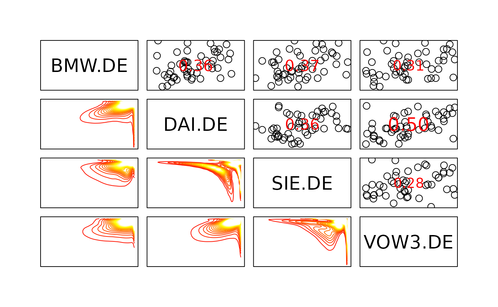
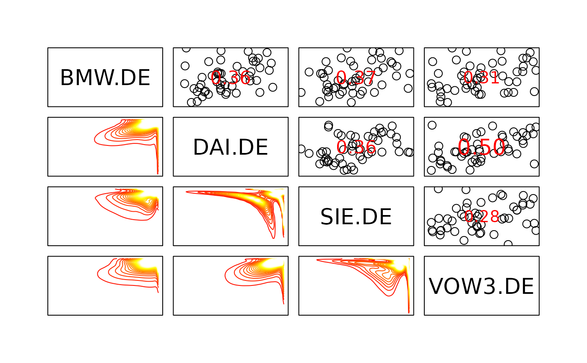

This function provides pair plots for copula data. Using default setting it plots bivariate contour plots on the lower panel, scatter plots and correlations on the upper panel and histograms on the diagonal panel.
# S3 method for copuladata
pairs(
x,
labels = names(x),
...,
lower.panel = lp.copuladata,
upper.panel = up.copuladata,
diag.panel = dp.copuladata,
label.pos = 0.85,
cex.labels = 1,
gap = 0,
method = "kendall",
ccols = terrain.colors(11),
margins = "norm"
)Arguments
- x
copuladataobject.- labels
variable names/labels.
- ...
other graphical parameters (see
graphics::par()) or options passed toBiCopKDE().- lower.panel
panel function to be used on the lower diagonal panels (if not supplied, a default function is used)
- upper.panel
panel function to be used on the upper diagonal panels (if not supplied, a default function is used)
- diag.panel
panel function to be used on the diagonal panels (if not supplied, a default function is used)
- label.pos
y position of labels in the diagonal panel; default:
label.pos = 0.85.- cex.labels
magnification to be used for the labels of the diagonal panel; default:
cex.labels = 1.- gap
distance between subplots, in margin lines; default:
gap = 0.- method
a character string indicating which correlation coefficients are computed. One of
"pearson","kendall"(default), or"spearman"- ccols
color to be used for the contour plots; default:
ccols = terrain.colors(30).- margins
character; margins for the contour plots. Options are:
"unif"for the original copula density,"norm"for the transformed density with standard normal margins,"exp"with standard exponential margins, and"flexp"with flipped exponential margins.
Note
If the default panel functions are used
colchanges only the color of the points in the scatter plot (upper.panel)cexchanges only the magnification of the points in the scatter plot (upper.panel)
See also
Examples
data(daxreturns)
daxreturns <- daxreturns[1:50, ]
data <- as.copuladata(daxreturns)
sel <- c(4,5,14,15)
## pairs plot with default settings
pairs(data[sel])
#> Error in (function (u1, u2, type = "contour", margins, size, kde.pars = list(), ...) { if (!requireNamespace("kdecopula", quietly = TRUE)) stop("The 'kdecopula' package must be installed.") args <- preproc(c(as.list(environment()), call = match.call()), check_u, remove_nas, check_if_01, na.txt = " Only complete observations are used.") list2env(args, environment()) args <- list(udata = cbind(u1, u2)) if (all(colnames(args$udata) == c("u1", "u2"))) args$udata <- unname(args$udata) args <- modifyList(args, kde.pars) est <- do.call(kdecopula::kdecop, args) if (missing(margins)) { margins <- switch(type, contour = "norm", surface = "unif") } return(plot(est, type = type, margins = margins, size = size, ...))})(u1 = c(0.828793223605221, 0.563928601045794, 0.596105082080661, 0.422989677071629, 0.426280538373799, 0.250871521532833, 0.307508168954636, 0.209134117395052, 0.772187568232017, 0.370202231451089, 0.242346738780308, 0.229610858681299, 0.326207290206335, 0.275122089336635, 0.526598457932209, 0.764079674225013, 0.0720375449409717, 0.564533700082421, 0.242173609509544, 0.616925989348952, 0.919404534083322, 0.329481801837119, 0.589021261523197, 0.660041583769616, 0.823295565637623, 0.445641722682252, 0.263552141873732, 0.692424830894824, 0.521762851797494, 0.2561102355391, 0.437512648284098, 0.168291917035958, 0.562403723574572, 0.369396598340998, 0.592784747965929, 0.0879474465008166, 0.391018490380026, 0.374377811922107, 0.739043627687625, 0.498666797683584, 0.685617858365343, 0.950570966820758, 0.79349507545456, 0.310570753871245, 0.483897819006696, 0.765430350043551, 0.208940982294245, 0.996887352448531, 0.940096190156251, 0.350272017362678), u2 = c(0.689566537120782, 0.416601915432264, 0.605402537888192, 0.378761338666525, 0.42425648465764, 0.271104325522517, 0.180276545731774, 0.305433822771395, 0.695754301025518, 0.409102893832751, 0.753692234799506, 0.547810776757584, 0.22718617215762, 0.413935659798132, 0.3381080139721, 0.719449831375803, 0.15699210203143, 0.403077707225533, 0.463191097460657, 0.835484038193385, 0.815703772659267, 0.865950889648, 0.386406242420101, 0.754127475109657, 0.740143030192251, 0.725528935973198, 0.280143163736663, 0.102619991850031, 0.661320314966605, 0.208458230719324, 0.66873404427836, 0.252616253945039, 0.386661913616945, 0.45164500003374, 0.67605843412308, 0.208267936239394, 0.0985441656721861, 0.240436489105883, 0.852876147223247, 0.25028872817098, 0.554979300795371, 0.415409816931636, 0.412773012037482, 0.410159883368287, 0.545017222077171, 0.307996502296401, 0.456547642063827, 0.112569906317326, 0.651911199952792, 0.511451040314779), size = 100, levels = c(0, 0.025, 0.05, 0.075, 0.1, 0.125, 0.15, 0.175, 0.2, 0.225, 0.25), margins = "norm", axes = FALSE, drawlabels = FALSE, col = c("#00A600", "#2DB600", "#63C600", "#A0D600", "#E6E600", "#E8C727", "#EAB64E", "#ECB176", "#EEB99F", "#F0CFC8", "#F2F2F2")): The 'kdecopula' package must be installed.
## pairs plot with custom settings
nlevels <- 20
pairs(data[sel], cex = 2, pch = 1, col = "black",
diag.panel = NULL, label.pos = 0.5,
cex.labels = 2.5, gap = 1,
method = "pearson", ccols = heat.colors(nlevels),
margins = "flexp")
 #> Error in (function (u1, u2, type = "contour", margins, size, kde.pars = list(), ...) { if (!requireNamespace("kdecopula", quietly = TRUE)) stop("The 'kdecopula' package must be installed.") args <- preproc(c(as.list(environment()), call = match.call()), check_u, remove_nas, check_if_01, na.txt = " Only complete observations are used.") list2env(args, environment()) args <- list(udata = cbind(u1, u2)) if (all(colnames(args$udata) == c("u1", "u2"))) args$udata <- unname(args$udata) args <- modifyList(args, kde.pars) est <- do.call(kdecopula::kdecop, args) if (missing(margins)) { margins <- switch(type, contour = "norm", surface = "unif") } return(plot(est, type = type, margins = margins, size = size, ...))})(u1 = c(0.828793223605221, 0.563928601045794, 0.596105082080661, 0.422989677071629, 0.426280538373799, 0.250871521532833, 0.307508168954636, 0.209134117395052, 0.772187568232017, 0.370202231451089, 0.242346738780308, 0.229610858681299, 0.326207290206335, 0.275122089336635, 0.526598457932209, 0.764079674225013, 0.0720375449409717, 0.564533700082421, 0.242173609509544, 0.616925989348952, 0.919404534083322, 0.329481801837119, 0.589021261523197, 0.660041583769616, 0.823295565637623, 0.445641722682252, 0.263552141873732, 0.692424830894824, 0.521762851797494, 0.2561102355391, 0.437512648284098, 0.168291917035958, 0.562403723574572, 0.369396598340998, 0.592784747965929, 0.0879474465008166, 0.391018490380026, 0.374377811922107, 0.739043627687625, 0.498666797683584, 0.685617858365343, 0.950570966820758, 0.79349507545456, 0.310570753871245, 0.483897819006696, 0.765430350043551, 0.208940982294245, 0.996887352448531, 0.940096190156251, 0.350272017362678), u2 = c(0.689566537120782, 0.416601915432264, 0.605402537888192, 0.378761338666525, 0.42425648465764, 0.271104325522517, 0.180276545731774, 0.305433822771395, 0.695754301025518, 0.409102893832751, 0.753692234799506, 0.547810776757584, 0.22718617215762, 0.413935659798132, 0.3381080139721, 0.719449831375803, 0.15699210203143, 0.403077707225533, 0.463191097460657, 0.835484038193385, 0.815703772659267, 0.865950889648, 0.386406242420101, 0.754127475109657, 0.740143030192251, 0.725528935973198, 0.280143163736663, 0.102619991850031, 0.661320314966605, 0.208458230719324, 0.66873404427836, 0.252616253945039, 0.386661913616945, 0.45164500003374, 0.67605843412308, 0.208267936239394, 0.0985441656721861, 0.240436489105883, 0.852876147223247, 0.25028872817098, 0.554979300795371, 0.415409816931636, 0.412773012037482, 0.410159883368287, 0.545017222077171, 0.307996502296401, 0.456547642063827, 0.112569906317326, 0.651911199952792, 0.511451040314779), size = 100, levels = c(0, 0.0131578947368421, 0.0263157894736842, 0.0394736842105263, 0.0526315789473684, 0.0657894736842105, 0.0789473684210526, 0.0921052631578947, 0.105263157894737, 0.118421052631579, 0.131578947368421, 0.144736842105263, 0.157894736842105, 0.171052631578947, 0.184210526315789, 0.197368421052632, 0.210526315789474, 0.223684210526316, 0.236842105263158, 0.25), margins = "flexp", axes = FALSE, drawlabels = FALSE, cex = 2, pch = 1, col = c("#FF0000", "#FF1200", "#FF2400", "#FF3700", "#FF4900", "#FF5B00", "#FF6D00", "#FF8000", "#FF9200", "#FFA400", "#FFB600", "#FFC800", "#FFDB00", "#FFED00", "#FFFF00", "#FFFF19", "#FFFF4D", "#FFFF80", "#FFFFB3", "#FFFFE6")): The 'kdecopula' package must be installed.
## pairs plot with own panel functions
up <- function(x, y) {
# upper panel: empirical contour plot
op <- par(usr = c(-3, 3, -3, 3), new = TRUE)
BiCopKDE(x, y,
levels = c(0.01, 0.05, 0.1, 0.15, 0.2),
margins = "exp",
axes = FALSE)
on.exit(par(op))
}
lp <- function(x, y) {
# lower panel: scatter plot (copula data) and correlation
op <- par(usr = c(0, 1, 0, 1), new = TRUE)
points(x, y, pch = 1, col = "black")
r <- cor(x, y, method = "spearman") # Spearman's rho
txt <- format(x = r, digits = 3, nsmall = 3)[1]
text(x = 0.5, y = 0.5, labels = txt, cex = 1 + abs(r) * 2, col = "blue")
on.exit(par(op))
}
dp <- function(x) {
# diagonal panel: histograms (copula data)
op <- par(usr = c(0, 1, 0, 1.5), new = TRUE)
hist(x, freq = FALSE, add = TRUE, col = "brown", border = "black", main = "")
abline(h = 1, col = "black", lty = 2)
on.exit(par(op))
}
nlevels <- 20
pairs(data[sel],
lower.panel = lp, upper.panel = up, diag.panel = dp, gap = 0.5)

#> Error in BiCopKDE(x, y, levels = c(0.01, 0.05, 0.1, 0.15, 0.2), margins = "exp", axes = FALSE): The 'kdecopula' package must be installed.
#> Error in (function (u1, u2, type = "contour", margins, size, kde.pars = list(), ...) { if (!requireNamespace("kdecopula", quietly = TRUE)) stop("The 'kdecopula' package must be installed.") args <- preproc(c(as.list(environment()), call = match.call()), check_u, remove_nas, check_if_01, na.txt = " Only complete observations are used.") list2env(args, environment()) args <- list(udata = cbind(u1, u2)) if (all(colnames(args$udata) == c("u1", "u2"))) args$udata <- unname(args$udata) args <- modifyList(args, kde.pars) est <- do.call(kdecopula::kdecop, args) if (missing(margins)) { margins <- switch(type, contour = "norm", surface = "unif") } return(plot(est, type = type, margins = margins, size = size, ...))})(u1 = c(0.828793223605221, 0.563928601045794, 0.596105082080661, 0.422989677071629, 0.426280538373799, 0.250871521532833, 0.307508168954636, 0.209134117395052, 0.772187568232017, 0.370202231451089, 0.242346738780308, 0.229610858681299, 0.326207290206335, 0.275122089336635, 0.526598457932209, 0.764079674225013, 0.0720375449409717, 0.564533700082421, 0.242173609509544, 0.616925989348952, 0.919404534083322, 0.329481801837119, 0.589021261523197, 0.660041583769616, 0.823295565637623, 0.445641722682252, 0.263552141873732, 0.692424830894824, 0.521762851797494, 0.2561102355391, 0.437512648284098, 0.168291917035958, 0.562403723574572, 0.369396598340998, 0.592784747965929, 0.0879474465008166, 0.391018490380026, 0.374377811922107, 0.739043627687625, 0.498666797683584, 0.685617858365343, 0.950570966820758, 0.79349507545456, 0.310570753871245, 0.483897819006696, 0.765430350043551, 0.208940982294245, 0.996887352448531, 0.940096190156251, 0.350272017362678), u2 = c(0.689566537120782, 0.416601915432264, 0.605402537888192, 0.378761338666525, 0.42425648465764, 0.271104325522517, 0.180276545731774, 0.305433822771395, 0.695754301025518, 0.409102893832751, 0.753692234799506, 0.547810776757584, 0.22718617215762, 0.413935659798132, 0.3381080139721, 0.719449831375803, 0.15699210203143, 0.403077707225533, 0.463191097460657, 0.835484038193385, 0.815703772659267, 0.865950889648, 0.386406242420101, 0.754127475109657, 0.740143030192251, 0.725528935973198, 0.280143163736663, 0.102619991850031, 0.661320314966605, 0.208458230719324, 0.66873404427836, 0.252616253945039, 0.386661913616945, 0.45164500003374, 0.67605843412308, 0.208267936239394, 0.0985441656721861, 0.240436489105883, 0.852876147223247, 0.25028872817098, 0.554979300795371, 0.415409816931636, 0.412773012037482, 0.410159883368287, 0.545017222077171, 0.307996502296401, 0.456547642063827, 0.112569906317326, 0.651911199952792, 0.511451040314779), size = 100, levels = c(0, 0.0131578947368421, 0.0263157894736842, 0.0394736842105263, 0.0526315789473684, 0.0657894736842105, 0.0789473684210526, 0.0921052631578947, 0.105263157894737, 0.118421052631579, 0.131578947368421, 0.144736842105263, 0.157894736842105, 0.171052631578947, 0.184210526315789, 0.197368421052632, 0.210526315789474, 0.223684210526316, 0.236842105263158, 0.25), margins = "flexp", axes = FALSE, drawlabels = FALSE, cex = 2, pch = 1, col = c("#FF0000", "#FF1200", "#FF2400", "#FF3700", "#FF4900", "#FF5B00", "#FF6D00", "#FF8000", "#FF9200", "#FFA400", "#FFB600", "#FFC800", "#FFDB00", "#FFED00", "#FFFF00", "#FFFF19", "#FFFF4D", "#FFFF80", "#FFFFB3", "#FFFFE6")): The 'kdecopula' package must be installed.
## pairs plot with own panel functions
up <- function(x, y) {
# upper panel: empirical contour plot
op <- par(usr = c(-3, 3, -3, 3), new = TRUE)
BiCopKDE(x, y,
levels = c(0.01, 0.05, 0.1, 0.15, 0.2),
margins = "exp",
axes = FALSE)
on.exit(par(op))
}
lp <- function(x, y) {
# lower panel: scatter plot (copula data) and correlation
op <- par(usr = c(0, 1, 0, 1), new = TRUE)
points(x, y, pch = 1, col = "black")
r <- cor(x, y, method = "spearman") # Spearman's rho
txt <- format(x = r, digits = 3, nsmall = 3)[1]
text(x = 0.5, y = 0.5, labels = txt, cex = 1 + abs(r) * 2, col = "blue")
on.exit(par(op))
}
dp <- function(x) {
# diagonal panel: histograms (copula data)
op <- par(usr = c(0, 1, 0, 1.5), new = TRUE)
hist(x, freq = FALSE, add = TRUE, col = "brown", border = "black", main = "")
abline(h = 1, col = "black", lty = 2)
on.exit(par(op))
}
nlevels <- 20
pairs(data[sel],
lower.panel = lp, upper.panel = up, diag.panel = dp, gap = 0.5)

#> Error in BiCopKDE(x, y, levels = c(0.01, 0.05, 0.1, 0.15, 0.2), margins = "exp", axes = FALSE): The 'kdecopula' package must be installed.